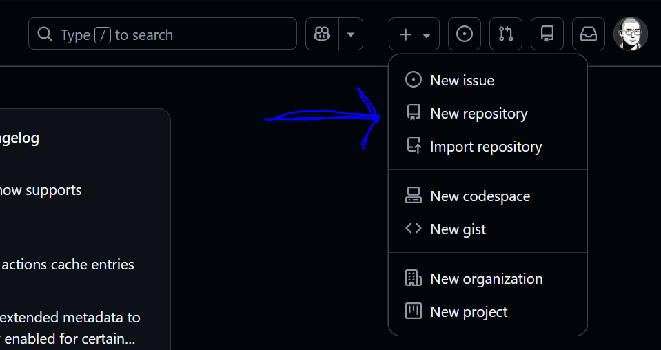
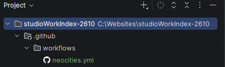

This page contains a brief recap of setting up our software and deploying our first webpage - the studio work index. This is assuming you are using your own computer, skip step one if you're on a Uni computer.
-
Download and install Required Software:
- GitHub Desktop - used for versioning and git respository management.
- WebStorm - used to write web code. I will be teaching using WebStorm however you can use any integrated development environment (IDE) that you prefer. Visual Studio Code is another common option.
- Chrome and FireFox - used to test our code. We will mostly be using Chrome as it's the industry standard for development, however we will also test using Firefox. If you use a Chromium browser such as Brave please also make sure you have vanilla Chrome installed.
-
Create a GitHub account:
If you don't already have one navigate to GitHub and create one. You can use either a student or personal email account. -
Create a new GitHub repository:
Navigate to GitHub in your browser and make sure you're signed in to your account. Click the plus in the top right corner and select new repository.
Name your new repository studioWorkIndex-2610 and make sure the visibility is set to public. -
Sign in to GitHub Desktop and clone your new repository:
Launch GitHub Desktop and sign in with your GitHub account. Follow the prompts to authorize GitHub Desktop. Go to the file menu and select 'Clone repository...'. You should see a list of your account's repositories, select the repository you created in the previous step, then make sure you're cloning it to the right location as indicated in the 'Local path' (you should keep all your repositories together). Press the 'Clone' button. -
Open repository in IDE:
Set your default IDE by going to the file menu, selecting options, and change the external editor in the Integrations tab. If WebStorm doesn't appear you may need to choose custom editor and link the executable in path. Open the repository folder in your IDE by selecting the open in external editor (or Visual Studio Code) option from the repository menu. -
Create index.html:
Create a new file in your IDE named "index.html". Press "!" and then "TAB" to add the default HTML skeleton. Add a h1 element inside the body element and give your page a title. Save the index.html file. -
Publish update to GitHub:
Go back to GitHub Desktop, in the bottom left write a commit title, something like 'setup index' would be fine. Then hit the 'Commit 1 file to main' button. Finally hit the 'Push origin' or 'Publish origin' button - it's along the top, third from the left. To double-check it worked, navigate to your GitHub account in the browser, select the appropriate repository and check if index.html reflects your changes. -
Complete the intro exercise:
Find the full details here. Remember to commit your changes and push them to origin using GitHub Desktop when you're done. -
Deploy with Netlify:
Navigate to https://www.netlify.com/ in your browser and press log in, then select 'Log in with GitHub'. You'll have to authorise this with your GitHub account if it's your first time. Then make sure you're in the projects view (via tab on left) and select 'Add new project' then 'Import an existing project' then click GitHub and authorise the session. You should see a list of your repositories, select the appropriate one (studioWorkIndex-2610 in this case), then you should be able to deploy with the default settings (there's a deploy button near the bottom of the page). -
Deploy with Neocities:
Unfortunately due to a change in Netlify's free tier it will no longer be fit for purpose for our work in the studio. As a work around we will be using Neocities' free hosting and a custom GitHub action script to achieve the same result. I've adapted Nenrikido's tutorial (OPTION 2) to integrate GitHub with neocities automatically.
- Navigate to Neocities and sign up for a free account. Note that your chosen username will be part of the URL - for example I chose p-hase, which made my home site https://p-hase.neocities.org/
-
Now we need to add a GitHub action - this is a set of instructions that will run whenever we
push changes to our repository, telling Neocities to update the website code. Inside of your
studioWorkIndex website folder we need to create a new folder called exactly ".github", then
a folder inside of .github called exactly "workflows", then finally a file inside of workflows
called exactly "neocities.yml" - see pic below:

- Navigate to this prewritten action file , copy the contents, and then paste it into your own newly created neocities.yml file.
- If we look at line 37 we can see that the action wants to get an api_key from secrets.NEOCITIES_API_TOKEN. When we use something secure like an API key we never want to save it directly in our repo. Instead we save it as a "secret" which only our code can read. Navigate to our studioWorkIndex repository in the browser, select settings, then in the security section of the lefthand sidebar click Secrets and variables, then select actions. We to add a new secret here, which will be named exactly NEOCITIES_API_TOKEN to match our code, and will contain the key we are about to find.
- To find our key we need to navigate to https://neocities.org/settings/{your-sitename}#api_key - so for me that would be https://neocities.org/settings/p-hase#api_key. Once there you should be able to generate a new key, and then copy and paste it into your GitHub secret.
- That's pretty much it - once you've saved the secret, and pushed the ./.github/workflows/neocities.yml file to your repository it should automatically populate your Neocities site! It will also automatically update with any new changes once you've pushed them to that repository.
-
Check live link:
Once your repository is deployed you should be able to see the link to it (it'll be in the top left card with a randomly generated name followed by .netlify.app) access it via your username URL - eg https://p-hase.neocities.org/. You should see your index.html page loaded with your answers. It's good to get into the habit of always checking the live version after publishing to make sure it works.